地政学
マプトは南アフリカ、エスワティニ、内陸鉱山地帯に近いインド洋港です。首都機能、外交、回廊交通、海上物流が重なり、南部アフリカの資源と消費市場を外洋へつなぐ結節点です。国境を越す経済が街を動かします。
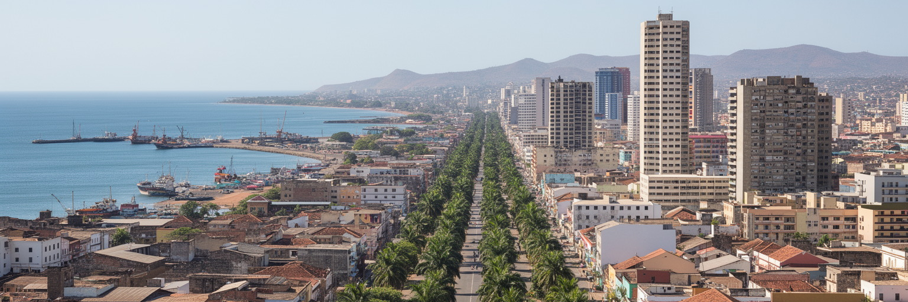
🇲🇿 モザンビーク / マプト市 / World City Atlas
インド洋の自然湾に開く首都で、港、鉄道、南アフリカ方面への回廊、行政、独立後の記憶、音楽、海辺の暮らしが近い距離で重なります。成長の集中と住宅格差も同時に見える都市です。
都市の骨格
マプトはデラゴア湾に面し、内陸国や南アフリカ北東部とインド洋を結ぶ回廊の起点です。ポルトガル植民地期の街路、独立後の行政、港湾労働、周辺の非正規居住が、同じ湾岸都市の中で近接しています。
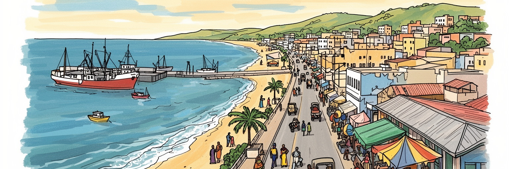
マプトは南アフリカ、エスワティニ、内陸鉱山地帯に近いインド洋港です。首都機能、外交、回廊交通、海上物流が重なり、南部アフリカの資源と消費市場を外洋へつなぐ結節点です。国境を越す経済が街を動かします。
港湾、鉄道、道路物流、行政、銀行、通信、小売、建設、飲食、観光が雇用を支えます。形式部門の職と、露店、ミニバス、家事労働、港周辺の臨時仕事が並び、若者と移住者の生活設計を左右します。収入差も大きいです。
ポルトガル語の公共文化に、ツォンガ系の生活、イスラム、カトリック、福音派、インド系商人、南ア音楽、独立闘争の記憶が重なります。市場、教会、モスク、ライブ会場が多声的な首都を形作ります。文化は混ざります。
住民は海岸通り、中央市場、駅、ミニバス、郊外住宅地、浜辺、サッカー、音楽を使い分けます。観光は建築、島、魚市場、夜の文化へ向かいますが、水害、家賃、渋滞、治安、雇用の不安も日常です。海辺の余暇も支えです。
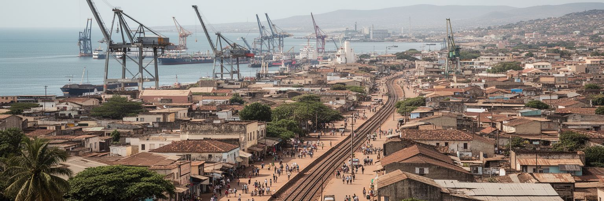
マプトの都市としての力は、デラゴア湾の奥にある自然港から生まれます。湾は外洋の荒さをやわらげ、鉄道と道路は南アフリカのハウテン州、エスワティニ、内陸の鉱山、農産地、工業地帯へ伸びています。港の岸壁ではコンテナ、石炭、鉱物、砂糖、車両、燃料、食料品が動き、税関、倉庫、運送会社、船員、清掃、警備、食堂の仕事が集まります。観光客には海辺の眺めやフェリーの風景として見えますが、住民にとって港は雇用と騒音、渋滞、立入制限、再開発期待が交差する場所です。マプト回廊は国家の成長戦略であると同時に、国境を越えて利益と負担を分ける仕組みでもあります。貨物が速く流れるほど、道路沿いの集落、港周辺の労働者、都市の大気、湾の水質をどう守るかが問われます。港湾都市を読むには、岸壁の能力だけでなく、鉄道保守、通関の信頼、労働安全、周辺住宅との距離を合わせて見る必要があります。マプトの湾は、モザンビークがインド洋へ開く窓であり、南部アフリカの内陸経済を海へ押し出す門でもあります。さらに、港の価値は国際企業だけのものではありません。港へ向かう小さな食堂、修理工、荷役を待つ労働者、家族へ送金する運転手が、回廊の経済を生活の単位へ引き戻します。湾の交通を追うことは、世界市場と家計が同じ道路でつながる様子を見ることです。
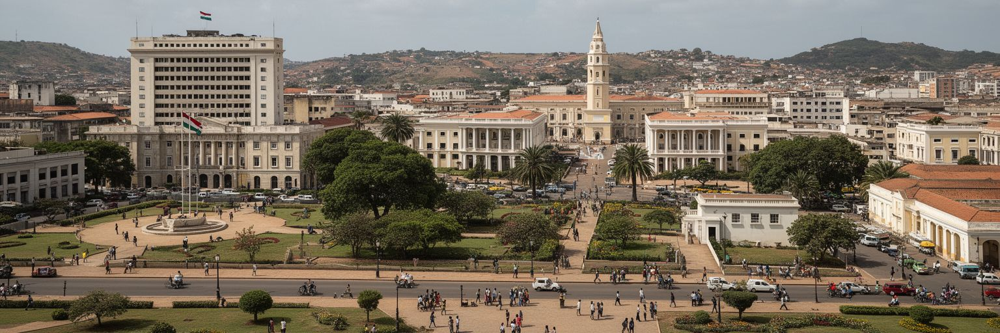
マプトはモザンビークの政治と行政の中心です。大統領府、政府機関、議会、大使館、国際機関、中央銀行、主要企業の本部が集まり、国の政策判断がこの都市を通じて国内各州へ流れていきます。独立後の国家建設、内戦、和平、複数政党制、資源開発、北部の武装勢力、選挙後の緊張は、首都の広場と報道機関に繰り返し映ります。政治の中心であることは、官庁街の威厳だけではありません。地方から来る人が書類を整え、学生が公務員を目指し、市民団体が抗議し、労働組合が賃金を求め、外交官が援助や投資を調整する日常の集積です。首都への権限集中は迅速な決定を可能にしますが、北部や中部との距離感、公共投資の偏り、言語と教育の差を強めることもあります。マプトを理解するには、政府の建物を眺めるだけでなく、そこで決まる道路、水道、学校、治安、港湾、資源収入の配分が、遠い州の暮らしへどう届くかを考える必要があります。首都の安定は国家全体の安定を象徴しますが、その信頼は各地の住民が行政を公平に感じられる時に初めて厚くなります。行政の集中は、書類、許認可、裁判、奨学金、医療紹介を求める地方住民を引き寄せます。その移動には宿泊費と待ち時間が伴い、首都で決まる制度が遠い家庭の負担として現れます。マプトの政治性は、演説の場だけでなく、窓口に並ぶ人の列にもあります。
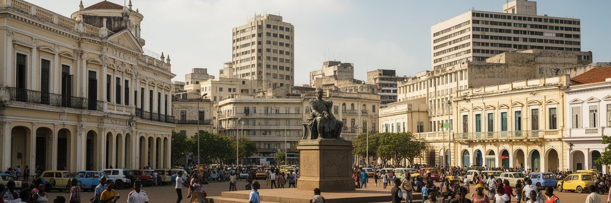
マプトはかつてロウレンソ・マルケスと呼ばれ、ポルトガル領東アフリカの港湾都市として整備されました。碁盤目状の街路、駅、要塞、教会、行政建築、近代主義建築、並木道には、植民地支配、隔離、移民商人、港湾労働、都市計画の記憶が残ります。独立後に都市名が変わったことは、単なる地名変更ではなく、首都が誰の歴史を語るのかを問い直す行為でした。旧市街の建築は美しく、観光資源にもなりますが、その背後にはアフリカ人住民を周辺へ押し出した空間構造、労働の不平等、言語と教育の壁があります。独立闘争を率いたFRELIMOの記憶、内戦の傷、社会主義期の都市管理、市場経済化の変化は、建物の使われ方や公共空間の名前に表れます。植民地都市を保存することは、支配の美学をそのまま祝うことではありません。駅や広場を歩く時、設計者や富裕層だけでなく、荷を運び、線路を敷き、郊外から中心へ通った人々の経験を重ねる必要があります。マプトの建築は、支配と解放、輸入された都市美と住民の再利用、過去を隠さずに使い続ける知恵を同時に示しています。古い建物は、修復されて観光の顔になる一方、空き室、維持費、権利関係の問題も抱えます。歴史を残すには、外観を磨くだけでなく、住民が使い続けられる家賃、公共施設、歩道、日陰、安全が必要です。記憶のある街路は、生活が続く時に初めて都市の財産になります。
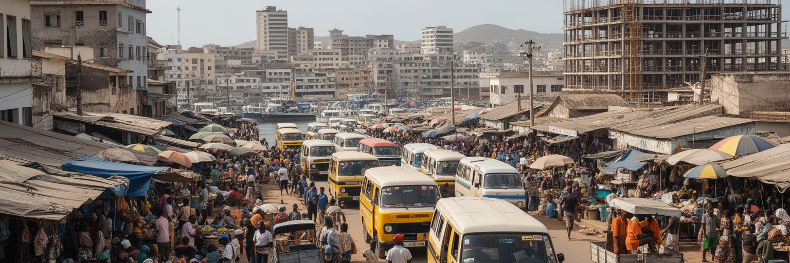
マプトの経済は、港湾、金融、行政、通信、建設、観光、商業に支えられますが、住民の生活は公式統計に入りにくい仕事にも大きく依存します。市場の露店、ミニバスのチャパ、荷運び、家事労働、警備、清掃、修理、携帯電話販売、屋台の食事、建設の日雇い、港周辺の臨時雇用が、家計を支えています。若者にとって首都は機会の場所ですが、教育、コネ、言語、交通費、住む場所によって職への入口は大きく変わります。港や政府機関の近くには比較的安定した賃金があり、周辺地区では長い通勤と不安定な収入が残ります。南アフリカとの経済関係は仕事を増やす一方、価格変動、通貨、輸入品競争にも生活をさらします。女性は市場、小売、家事、食堂、ケア労働で都市を支えますが、収入や安全の面で弱い立場に置かれやすいです。マプトを経済都市として読むなら、港湾総取扱量やビルの数だけでなく、朝の市場で商品を並べる人、満員のチャパで通う人、夜に店を閉める人の時間を見なければなりません。都市の成長が住民の安定へつながるかは、非公式な働き方を罰するのではなく、交通、衛生、信用、保育、技能訓練で支えられるかにかかっています。小さな商いは不安定でも、都市の柔軟性を支えます。雨で客足が止まる日、警察の取り締まりが強い日、仕入れ値が上がる日には、家計はすぐ揺れます。労働市場を読むことは、成長率では見えない脆さを読むことです。
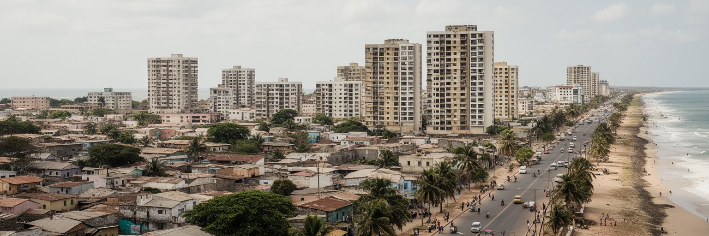
マプトの都市形態は、湾に沿う中心部と海岸住宅地、内陸へ広がる周辺地区、さらにマトラ方面の都市圏によって作られます。海岸通りやポラナ周辺では、眺望のよい住宅、ホテル、官庁、外交施設、レストランが目立ち、首都らしい開放感があります。一方、内陸の bairros には、細い道、未舗装区間、排水の弱さ、混雑したミニバス、非正規住宅、家族経営の小店が広がります。海に近い中心は都市の顔ですが、労働力の多くはより遠い地区から通い、交通費と時間を負担しています。急な都市化は土地権利、住宅供給、上下水道、廃棄物、学校、診療所の不足を強めます。湾岸の再開発が進むほど、海辺の公共性を誰が使えるのかも問題になります。高級住宅や商業施設が水辺を囲めば、住民の散歩、釣り、休憩、露店の余地は小さくなります。マプトの魅力は、海風と並木の美しさだけではありません。中心と周辺、舗装路と砂道、高層建築と自力建設住宅が同じ都市圏にあることを見つめる時、都市計画の課題がはっきりします。海辺の景観を守ることと、内陸の生活基盤を整えることは、同じ首都を公平にするための作業です。都市圏が広がるほど、通勤の疲労は子どもの通学や高齢者の通院、家族の時間を削ります。橋や幹線道路は距離を縮めますが、運賃、乗り継ぎ、夜間の安全が伴わなければ、移動は自由ではなく負担になります。海岸の余暇と郊外の通勤を同時に見ることが、マプトの日常を理解する近道です。
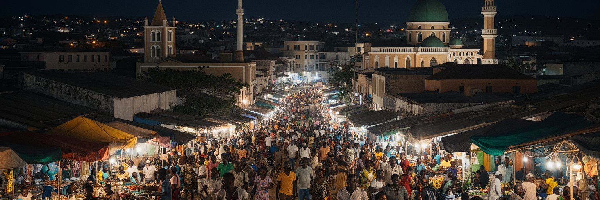
マプトの文化は、ポルトガル語を共有語としながら、ツォンガ系の生活、イスラム、カトリック、福音派、インド系商人、南アフリカとの行き来、独立闘争の記憶を重ねて作られています。街ではマラベンタや現代ポップ、ヒップホップ、ジャズ、教会音楽、クラブの音が交わり、ライブ会場や市場、結婚式、路上の店が文化の舞台になります。宗教も単純ではありません。教会、モスク、祈祷集会、祖先への敬意、家族儀礼が生活の節目を支え、都市の不安や病、失業、移住の経験を受け止めます。植民地期の言語と建築は公共文化の骨格を作りましたが、住民はそれを自分たちの音、料理、服装、冗談、政治風刺で作り替えてきました。マプトの文化を観光的な夜遊びだけで見ると、労働の疲れを癒す場所、若者が表現する場所、女性が安全を交渉する場所、宗教共同体が支援を組む場所を見落とします。文化産業は雇用にもなりますが、著作権、会場費、交通、夜間治安、デジタル配信の収入格差と向き合う必要があります。マプトの魅力は、港町らしい混ざり方にあります。言葉、祈り、リズム、食卓が、国境を越えて来たものを受け入れながら首都の表情を作っています。文化は中心部の会場だけでなく、郊外の家族行事、学校、教会の合唱、ラジオ番組、SNSの動画にも広がります。若い表現者は世界の音を取り込みますが、地元の言葉や踊りも手放しません。その往復が、マプトを固定した伝統ではなく、更新される都市文化にしています。
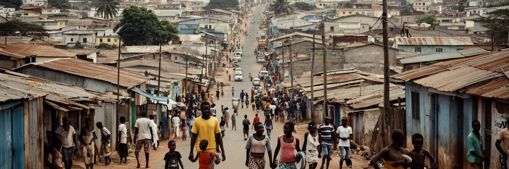
マプトは首都として国内各地から人を引き寄せます。仕事、学校、病院、行政手続き、親族ネットワークを求めて移動する人々は、中心部よりも周辺地区や隣接するマトラ、郊外の住宅地に暮らすことが多いです。住宅不足は単に建物の数の問題ではなく、土地の権利、家賃、通勤費、上下水道、排水、電力、学校、治安、雇用の近さと結びつきます。非正規居住は住民の努力不足ではなく、急速な都市化に制度とインフラが追いつかない結果です。雨季には低地の浸水や道路のぬかるみが通勤通学を難しくし、乾季にも水の確保、粉じん、廃棄物の処理が課題になります。若者は首都での成功を夢見ますが、安定した仕事に届かず、 informal な商売や短期雇用を組み合わせることも多いです。治安不安が語られる時も、犯罪だけを切り離すのではなく、失業、教育からの離脱、薬物、家庭内暴力、公共照明、交通手段を合わせて考える必要があります。マプトの社会問題は、成長が失敗している証拠というより、成長の利益がどこへ届いていないかを示す地図です。住民の自力建設、近隣の助け合い、市民団体の活動を行政がどう支えるかが、首都の包摂力を決めます。移住者は親族の部屋に身を寄せ、少しずつ材料を買って家を直し、学校や仕事の情報を近所から得ます。その粘り強さは都市を成長させますが、制度が追いつかなければ個人の負担ばかり増えます。住宅政策は、こうした暮らしの積み重ねを認めるところから始まります。
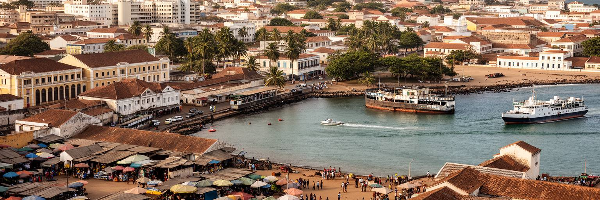
マプト観光は、中央駅、要塞、鉄の家、独立広場、中央市場、自然史博物館、海岸通り、魚市場、カテムベ方面の眺め、近郊の島々への小旅行をゆっくり結ぶ体験です。ポルトガル植民地期の建築と独立後の記念空間、熱帯の並木、インド洋の空気が近い距離で重なり、巨大観光都市とは違う首都の歩き方を促します。市場では魚、果物、香辛料、布、日用品が並び、炭火の匂いと呼び込みが風景を濃くしますが、住民にとっては家計と食卓の基盤です。夜の音楽やレストラン、週末のサッカー観戦も魅力ですが、そこで働く人の帰宅、安全、賃金、電力、仕入れも観光の一部です。建築観光には注意も必要です。植民地期の建物を美しい遺産として眺めるだけでは、支配、隔離、労働の記憶を薄めてしまいます。マプトを訪れる旅は、写真を撮るだけでなく、街路の名前、港の方向、独立後の公共芸術、日常の市場、海辺に座る家族をつなげるほど深くなります。観光収入が地元の小店、ガイド、音楽家、修復職人へ届けば、遺産は生活を支える資源になります。短い滞在でも、中心部だけでなく湾、橋、周辺地区への広がりを意識すると、首都の複雑さが見えてきます。訪問者が市場で値切る時、写真を撮る時、夜に移動する時には、住民の仕事と安全への配慮が必要です。ゆっくり歩き、地元の案内を聞き、海辺だけでなく日常の商いを尊重する旅は、都市を消費するよりも深く理解する方法になります。
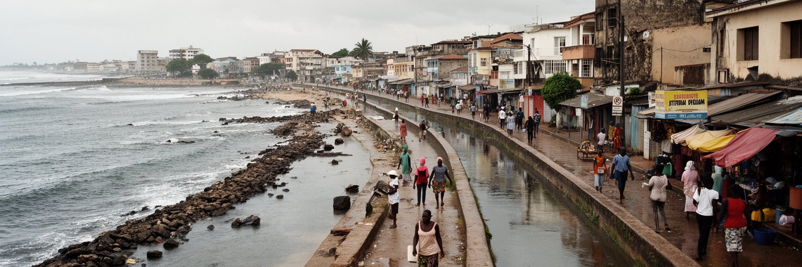
マプトは熱帯サバナ気候の海辺の首都で、暑さ、雨季、乾季、海風が生活のリズムを作ります。湾に面する開放感は大きな魅力ですが、気候リスクも集中します。強い雨による浸水、排水不良、低地住宅の被害、海岸侵食、高潮、熱波、サイクロンの影響、廃棄物が詰まる水路は、都市計画と健康の論点です。モザンビークは気候災害に弱い国であり、首都の備えは国家全体の対応力を象徴します。中心部の道路やホテルだけが守られても、周辺地区の住民が水に浸かり、学校や診療所へ行けないなら都市は強くなりません。気候対策は堤防や排水路だけでなく、土地利用、住宅の改善、緑地、早期警報、ゴミ収集、公共交通、保険、住民参加を含みます。暑さは屋外労働者、露店商、子ども、高齢者、慢性疾患のある人に強く影響します。海辺の都市の美しさを将来へ残すには、観光地の景観整備と同じくらい、見えにくい排水路の清掃、湿地の保全、低所得地区の安全な住まいが重要です。マプトの気候リスクは、自然だけの話ではありません。どの地区が守られ、どの人が後回しにされるのかという公平性の論点でもあります。雨季前の側溝清掃、避難情報、学校の安全、露店の場所、バス路線の維持は、地味でも命に関わります。災害後の復旧だけでなく、ふだんの都市管理を積み上げることが、湾岸首都の将来を守ります。
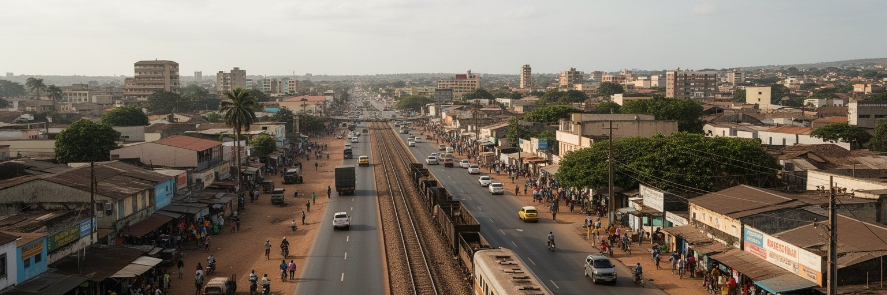
マプトはモザンビークの首都であると同時に、南部アフリカの国境経済の都市です。南アフリカのネルスプロイト方面、ヨハネスブルク圏、エスワティニとの近さは、物流だけでなく、出稼ぎ、買い物、教育、医療、親族関係、音楽、通貨感覚にも影響します。南アの景気や国境手続き、燃料価格、輸入品の流れは、マプトの市場価格と仕事に反映されます。港から内陸へ向かう貨物の速度を上げる政策は重要ですが、回廊は地図上の線ではなく、沿道の住民、トラック運転手、税関職員、鉄道労働者、小商人、食堂、修理工の生活圏でもあります。国境を越える経済は機会を広げる一方、密輸、交通事故、感染症対応、人身取引、労働搾取、通貨変動などの問題も持ち込みます。マプトの都市性は、国内だけを見ていては理解できません。ポルトガル語の首都でありながら、英語圏南アフリカ、地域言語、インド洋交易、援助機関、投資家が交差します。国境近接性は首都を開く力であり、同時に外部の変化に弱くする条件でもあります。住民の暮らしを守るには、回廊の効率だけでなく、労働者の安全、地域の小商い、移動する家族の権利を考える必要があります。週末の買い物、国境を越えるバス、送金、輸入食品、南アの放送や音楽は、日常の感覚も変えます。地域回廊は大企業の物流路である前に、人が情報と希望を運ぶ道です。その往来が首都の開放性を作ります。
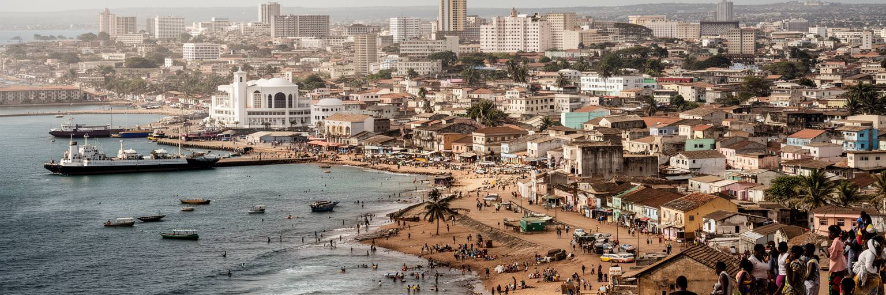
マプトは、モザンビークの政治、経済、文化が最も密に集まる都市です。インド洋の港、南部アフリカ回廊、政府機関、大使館、金融、通信、大学、音楽、市場、海岸生活が短い距離に集まり、国の未来を映します。都市の魅力は、海風のある並木道や歴史建築だけではありません。港で動く貨物、中心部へ向かうチャパ、周辺地区の自力建設住宅、市場の女性商人、教会とモスク、夜のライブ、独立の記憶が同じ首都を作っています。一方で、成長の集中は住宅費、渋滞、非公式労働、排水、水害、治安不安、地域格差を強めます。マプトを読むことは、首都の華やかな顔と、そこへ毎日通い、働き、支える人々の時間を重ねることです。南アフリカとの近さは機会を生み、国境経済の不安定さも持ち込みます。植民地期の街路は観光資源になりますが、支配と隔離の記憶を忘れずに使い直す必要があります。気候リスクへの備えは、海辺の景観を守るだけでなく、低地や周辺地区の暮らしを守る政策でもあります。マプトの世界性は、巨大な金融都市のような量ではなく、港、国境、独立、援助、移住、音楽が交差する密度にあります。その重なりを丁寧に見るほど、首都は南部アフリカとインド洋をつなぐ生きた都市として立ち上がります。港の数字、GDP、人口だけでは、この都市の手触りはつかめません。朝の通勤、午後の暑さ、雨季の排水、夜の音楽、祈り、家族への送金を合わせて見る時、マプトは国家の縮図であると同時に、海へ開かれた生活圏として理解できます。